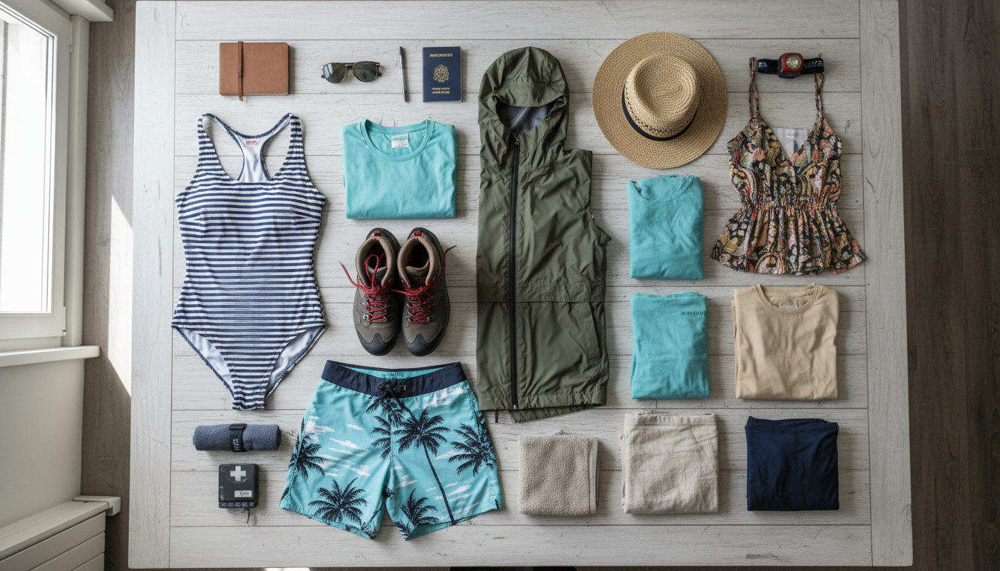

Planificación de Ropa para Mujeres - Viaje Costa Rica

Fechas: 23-29 Noviembre 2025 (6 días) Grupo: 10 adultos
Información del Clima por Región (Noviembre 2025)
San José
- Temperatura: 59-75°F (16-24°C)
- Promedio: Máx 73°F / Mín 59°F
- Lluvias: ~28 días con lluvia, 165mm precipitación
- Condición: Fin de época lluviosa, condiciones mejoran durante el mes
La Fortuna (Arenal)
- Temperatura: 68-83°F (20-29°C)
- Condición: Cálido y húmedo
- Lluvias: ~21 días con lluvia, 315mm precipitación
- Nota: Lluvias de 1-3 horas seguidas de cielos despejados
⚠️ Volcán Irazú (Día 4)
- Temperatura: 41-59°F (5-15°C) - ¡MUY FRÍO!
- Altitud: 3,432 msnm
- Condición: Puede estar nublado/con neblina
- CRÍTICO: Llevar ropa de abrigo gruesa
Actividades Específicas Confirmadas
✅ Naturaleza: Volcán Arenal, Cascada La Fortuna, Volcán Irazú ✅ Aventura: Aguas Termales, ATV Los Rápidos ✅ Ciudad/Cultural: San José, Cartago, Basílica, Mercado Artesanías ✅ Alojamiento: Con acceso a lavadora (permite empacar menos)
👗 LISTA DE ROPA RECOMENDADA
Ropa Superior (10-12 piezas)
Para Actividades: - 3-4 camisetas técnicas/deportivas (secado rápido) - Para hiking y aventura - 2 tank tops deportivos - Para clima cálido y actividades acuáticas - 1-2 blusas de manga larga ligera - Protección solar y mosquitos - 1 camisa ligera tipo safari o lino - Versatil para naturaleza y ciudad
Para Ciudad: - 2-3 blusas casuales/semi-casual - Para restaurantes y city tour - 1 blusa o top más arreglado (opcional) - Para cenas o salidas nocturnas
Para Clima Frío: - 1 sudadera o hoodie ligero - Para noches y aire acondicionado - ⚠️ 1 chaqueta/suéter GRUESO - CRÍTICO para Volcán Irazú (41-50°F / 5-10°C) - Opciones: fleece grueso, chaqueta acolchada ligera, cardigan grueso de lana - Debe ser abrigador para clima de montaña
Ropa Inferior (6-7 piezas)
Pantalones: - 1-2 leggings deportivos o pantalones de yoga - Cómodos para hiking y viajes - 1 pantalón convertible o pantalón de hiking - Versátil para naturaleza - 1 pantalón casual/jeans ligero - Para ciudad - 1 pantalón que pueda ensuciarse - Para ATV (se manchará de barro)
Shorts/Faldas: - 1-2 shorts deportivos - Para clima cálido - 1 falda ligera o vestido casual (opcional) - Para ciudad o días relajados
Trajes de Baño: - 1-2 trajes de baño - ESENCIAL: Aguas Termales (Día 1) + Cascada (Día 2) - 1 cover-up o pareo - Para usar sobre traje de baño
Ropa Interior y Pijamas (7-8 juegos)
Ropa Interior: - 6-7 calzones/pantys (puedes lavar a mitad de semana) - 2-3 bras deportivos - Para actividades y comodidad - 1-2 bras regulares - Para ciudad - 1 bra de soporte para hiking (opcional)
Calcetines: - 3-4 pares calcetines deportivos medianos - Para hiking y actividades - 2 pares calcetines casuales cortos - Para uso general - ⚠️ 2 pares calcetines largos/gruesos - Para Volcán Irazú (frío)
Pijamas: - 2 sets pijama ligera o ropa de dormir - Clima cálido y húmedo
Calzado (3-4 pares)
ESENCIALES: - 1 par botas o zapatos de hiking impermeables - CRÍTICO para naturaleza - 1 par zapatillas deportivas/tenis cómodas - Para ciudad y uso general - 1 par sandalias deportivas o chanclas - Casual, playa, después de hiking
Opcional: - 1 par sandalias más arregladas - Para ciudad o salidas nocturnas
Ropa para Lluvia (IMPORTANTE - Noviembre = época lluviosa)
- 1 chaqueta impermeable con capucha - Para lluvias de tarde
- 1 poncho de lluvia compacto (opcional) - Para hiking bajo lluvia
- 1 cover/funda impermeable para mochila - Proteger equipaje
Accesorios Esenciales
Protección Solar y Clima: - 1-2 gorras o sombreros - Protección solar - 1 sombrero de ala ancha (opcional) - Mejor protección facial - ⚠️ 1 gorro/beanie - Para Volcán Irazú (frío) - 1 bufanda ligera o neck gaiter - Para Irazú y aviones con A/C - Gafas de sol con protección UV
Para Actividades: - 1 mochila pequeña/daypack (20-30L) - Para excursiones diarias - 2 toallas de secado rápido (microfibra) - Aguas termales, cascada, ducha - 1-2 bolsas impermeables/dry bags - Proteger celular/cámara/ropa - 1 bandana o buff (opcional) - Versátil para sudor, polvo, protección solar
Cuidado Personal: - Productos menstruales/tampones - Por si acaso - Pequeña neceser con básicos - Bloqueador solar facial y corporal - Repelente de mosquitos - After sun o crema hidratante - Desodorante - Productos de higiene personal básicos
Extras Útiles
- 1-2 scrunchies o ligas para cabello - Para actividades
- 1 pañuelo o bandana linda - Para fotos o outfit
- Pequeño espejo de mano
- Bobby pins/pasadores
- Pinzas pequeñas para ropa (colgar trajes de baño)
📦 ESTRATEGIA DE EMPAQUE
Aprovecha la Lavadora (Día 3-5)
Con acceso a lavadora en los Airbnbs: - Llevar menos ropa (6 días pero ropa para 3-4 días) - Lavar ropa técnica a mitad del viaje - La ropa de secado rápido estará lista en 1 noche - Plan sugerido: Lavar noche del Día 3 o Día 5
Organización en Maleta
- Cubes de empaque por categoría:
- Cube 1: Tops/blusas
- Cube 2: Pantalones/shorts
- Cube 3: Ropa interior/calcetines
-
Cube 4: Ropa de abrigo
-
Bolsas especiales:
- Bolsa impermeable: Trajes de baño húmedos
- Bolsa de tela: Ropa sucia
-
Bolsa pequeña: Accesorios de cabello
-
Compression bags: Ahorrar espacio con ropa de abrigo
-
Zapatos: En bolsas individuales para proteger ropa
Prioridades de Espacio
🔴 CRÍTICO - No negociable: - Botas de hiking impermeables - Chaqueta gruesa para Irazú - Chaqueta impermeable - Trajes de baño (2x)
🟡 IMPORTANTE - Muy recomendado: - Ropa técnica de secado rápido - Ropa interior suficiente - Gorro/beanie para frío - Productos de cuidado personal
🟢 FLEXIBLE - Puede reducirse: - Ropa casual extra (puedes lavar) - Outfits adicionales para ciudad - Accesorios decorativos
📅 PLAN DE ROPA DÍA POR DÍA
Domingo 23 Nov - Día 0: Llegada Nocturna
Vuelo (13h total): - Leggings o pantalón cómodo de viaje - Camiseta o blusa cómoda - Sudadera/cardigan (avión con A/C) - Calcetines cómodos + zapatillas/tenis - Bufanda ligera (útil como almohada o manta)
En carry-on por si equipaje se pierde: - 1 cambio completo de ropa - Ropa interior - Productos de higiene básicos - Medicamentos
Llegada Hotel Aloft (~8-9 PM): - Misma ropa del vuelo (solo dormir)
Lunes 24 Nov - Día 1: La Fortuna + Volcán Arenal + Aguas Termales
Mañana - Traslado San José → La Fortuna (3h): - Pantalón cómodo/leggings - Camiseta o blusa ligera - Zapatillas/tenis
Tarde - Volcán Arenal (Hiking): - Leggings o pantalón de hiking - Camiseta técnica - Bra deportivo - Botas de hiking - Gorra/sombrero - Bloqueador solar, repelente - Mochila pequeña con agua
Noche - Aguas Termales: - Traje de baño 🩱 - Cover-up o pareo - Sandalias - Toalla de secado rápido - Ropa cómoda para después (shorts + blusa ligera) - Ligas para cabello
Check-in Casa Mañana (late ~9-10 PM): - Ya en pijama después de termales
Martes 25 Nov - Día 2: ATV Los Rápidos + Cascada La Fortuna
Mañana - ATV Tour: - Pantalón viejo que pueda ensuciarse (se manchará de barro) - Camiseta que pueda mancharse - Bra deportivo - Zapatillas/tenis (zapato cerrado) - Gafas de sol - Cabello recogido - Llevar cambio de ropa en mochila
Tarde - Cascada La Fortuna: - Traje de baño debajo de ropa - Shorts o leggings cortos sobre traje de baño - Tank top o camiseta ligera - Zapatos con buen agarre (pueden mojarse) - Toalla - Bolsa impermeable para celular/cámara - Cambio de ropa interior (opcional)
Noche - Cena en La Fortuna: - Blusa casual - Shorts o pantalón casual - Sandalias o tenis limpias
Miércoles 26 Nov - Día 3: La Fortuna → San José + City Tour
Mañana - Traslado (3h) + Check-in Casa Ayarcos: - Ropa cómoda de viaje - Leggings o pantalón casual - Blusa o camiseta - Zapatillas
Tarde - City Tour San José + Mercado Artesanías: - Pantalón casual/jeans o falda - Blusa casual linda (fotos) - Zapatillas/tenis cómodas para caminar - Mochila pequeña o crossbody bag - Gorra/sombrero - Gafas de sol
Noche: - Ropa casual para cena - Opción: Lavar ropa esta noche (usar lavadora Casa Ayarcos)
Jueves 27 Nov - Día 4: Cartago + Basílica + Volcán Irazú ❄️
Todo el día - CLIMA FRÍO (41-59°F / 5-15°C):
Capas recomendadas (sistema de capas): 1. Base: Camiseta térmica o camiseta manga larga 2. Media: Sudadera o fleece 3. Externa: Chaqueta/suéter GRUESO ⚠️ 4. Opcional: Bufanda ligera
Parte inferior: - Pantalones largos (NO shorts) - jeans o leggings gruesos - Calcetines largos/gruesos - Botas o zapatillas (zapato cerrado)
Accesorios críticos: - Gorro/beanie (proteger orejas del frío) - Bufanda o neck gaiter - Guantes ligeros (opcional pero útil) - Gafas de sol (viento)
Tips: - Llevar capas que puedas quitar/poner (temperatura variable) - Basílica puede requerir hombros cubiertos - Usar ropa que abrigue pero permita movimiento
Viernes 28 Nov - Día 5: Día Libre San José
Según actividades elegidas:
Opción Ciudad/Shopping: - Outfit casual urbano - Blusa o top lindo - Pantalón/jeans o falda - Zapatillas cómodas para caminar - Bolso crossbody
Opción Relax: - Ropa cómoda y fresca - Shorts + camiseta - Sandalias - Día para descansar y lavar ropa si es necesario
Noche (última noche): - Outfit más arreglado si van a cenar especial - O casual según plan del grupo
Sábado 29 Nov - Día 6: Regreso
Early check-out (6:00 AM): - Empacar TODO la noche anterior (viernes) - Dejar ropa del vuelo lista
Vuelo de regreso (8h): - Ropa cómoda para viaje largo - Leggings o pantalón cómodo - Blusa/camiseta suave - Sudadera o cardigan (avión con A/C) - Calcetines cómodos + zapatos fáciles (seguridad aeropuerto) - Bufanda ligera
En carry-on: - Productos de higiene para refrescar - Cambio de ropa interior (por si acaso) - Snacks
🎒 Información Clave
Total Aproximado de Piezas
- Ropa superior: 10-12 piezas (incluye abrigo Irazú)
- Ropa inferior: 6-7 piezas (incluye trajes de baño)
- Ropa interior: 7-8 juegos completos
- Calzado: 3-4 pares
- Accesorios: 10-12 items esenciales
Peso Estimado de Ropa
- Optimizado (con lavadora): ~6-7 kg
- Cómodo: ~8-9 kg
- Incluye: Ropa de abrigo, zapatos, toallas, accesorios
⚠️ ITEMS CRÍTICOS NO NEGOCIABLES
Top 5 Absolutamente Esenciales:
- Chaqueta/suéter GRUESO - Volcán Irazú (41-50°F / 5-10°C)
- Botas de hiking impermeables - Volcán Arenal, Cascada, Irazú
- 2 Trajes de baño - Aguas termales (Día 1) + Cascada (Día 2)
- Chaqueta impermeable - Lluvias frecuentes en noviembre
- Gorro/beanie + calcetines gruesos - Para el frío del Irazú
Otros Importantes:
- Bloqueador solar facial + corporal
- Repelente de mosquitos
- 2 toallas de secado rápido
- Bolsas impermeables para electrónicos
- Productos menstruales
💡 TIPS ESPECIALES PARA MUJERES
Material y Tejidos Recomendados
✅ Para actividades: - Tejidos técnicos (polyester, nylon) - Secan rápido - Mezclas con elastano/spandex - Comodidad y movimiento - Microfibra para toallas y ropa interior
✅ Para ciudad: - Mezclas algodón-sintético - Frescas pero no tan pesadas - Lino o rayón - Ligeros para clima cálido
❌ Evitar: - 100% algodón grueso - Tarda en secar, pesado con humedad - Materiales delicados - Se arrugan o dañan fácil
Colores y Estampados
Para naturaleza/aventura: - Colores oscuros (negro, azul marino, verde oliva) - Ocultan manchas - Evitar blanco - Se ensucia muy rápido
Para ciudad/fotos: - Colores vibrantes o pasteles - Fotos lindas - Estampados tropicales - Van con el ambiente
Ropa Interior y Comodidad
- Truco: Llevar ropa interior de secado rápido (nylon/polyester)
- Lavar en la ducha por la noche, seca en 1 noche
- Bras deportivos más versátiles que bras regulares
- Considerar bralets para días casuales (más cómodos en clima cálido)
Cuidado del Cabello
- Humedad alta = Cabello puede encresparse
- Llevar productos anti-frizz si tienes cabello liso
- Aceite o leave-in conditioner útil
- Secadora de pelo: Los Airbnbs probablemente tienen
- Peinados prácticos: Trenzas, coletas, moños
- Proteger cabello del cloro en aguas termales
Maquillaje y Cuidado de la Piel
Recomendado llevar mínimo: - Clima cálido y húmedo hace que maquillaje pesado se corra - Priorizar skincare sobre makeup - BB cream o CC cream con SPF - Rímel waterproof (aguas termales, cascadas) - Bloqueador facial (ESENCIAL - aplicar cada 2-3h) - After sun o gel aloe vera - Lip balm con SPF
Higiene Femenina
- Toallitas íntimas útiles para días de mucha actividad
- Productos menstruales aunque no esperes periodo (por si acaso)
- Copa menstrual útil para actividades acuáticas
- Desodorante extra (clima cálido y húmedo)
Para Fotos Lindas
- 1-2 outfits específicos para fotos
- Vestido o conjunto coordinado para city tour
- Colores que contrasten con naturaleza (rojos, amarillos, blancos para fotos en verde)
- Pareo o vestido playero para fotos en aguas termales
📋 CHECKLIST FINAL ANTES DE EMPACAR
Ropa por Clima
- ⚠️ Chaqueta GRUESA para Volcán Irazú (41-50°F)
- ⚠️ Gorro/beanie + bufanda para frío
- ⚠️ Calcetines largos/gruesos (2 pares)
- Chaqueta impermeable con capucha
- Poncho de lluvia (opcional)
Ropa por Actividad
- ⚠️ 2 trajes de baño (aguas termales + cascada)
- Cover-up o pareo
- Botas de hiking impermeables
- Pantalón viejo para ATV (se ensuciará)
- Ropa técnica de secado rápido
- 2 toallas de secado rápido
Accesorios Críticos
- Gorra/sombrero para sol
- Gafas de sol con UV
- Mochila pequeña/daypack
- 2-3 bolsas impermeables (celular, cámara, ropa)
- Bloqueador solar facial y corporal
- Repelente de mosquitos
- Productos menstruales
Organización
- Cubes de empaque por categoría
- Bolsa para ropa sucia
- Bolsa para trajes de baño húmedos
- Zapatos en bolsas individuales
- Compression bags para ropa de abrigo
Verificación Múltiple Uso
Verificar que cada prenda sirva para 2+ actividades: - [ ] Leggings: Viaje, hiking, ciudad ✓ - [ ] Camisetas técnicas: Hiking, ATV, cascada ✓ - [ ] Zapatillas: Ciudad, viaje, uso general ✓ - [ ] Sudadera: Avión, noches frescas, casual ✓
📝 NOTAS PERSONALES
(Espacio para agregar preferencias individuales o ajustes según necesidades)
Consideraciones Personales:
- Sensibilidad al frío/calor
- Preferencias de estilo
- Alergias a productos
- Medicamentos específicos
- Necesidades especiales
Ajustes por Persona:
-
-
🎯 Resumen Rápido
Clima: Cálido-húmedo (68-83°F) + FRÍO en Irazú (41-59°F) + lluvias frecuentes
Priorizar: 1. Ropa técnica de secado rápido 2. Ropa de abrigo GRUESA para Irazú 3. Trajes de baño (2x) + toallas 4. Zapatos impermeables para hiking 5. Protección contra lluvia y sol
Estrategia: - Empacar ligero (usar lavadora a mitad de viaje) - Capas para adaptarse a diferentes climas - Priorizar funcionalidad sobre moda - Cada prenda debe servir para múltiples ocasiones
Peso maleta: 6-9 kg de ropa total (optimizado con lavadora)
¿Listas para la aventura? 🌴🌋🦥